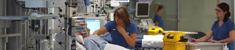

HOME
SERVICES
DEPARTMENTS & CENTERS
HOSPITAL SERVICES
COMMUNITY SERVICES
SPECIALTY SERVICES
PRIMARY CARE
WOMEN'S HEALTH
ABOUT US
ACADEMICS
RESIDENCIES
FELLOWSHIP
INTERNSHIP PROGRAMS
GIVINGS
DONATE TO A CHARITY
TISSUE & ORGAN DONATIONS
FACILITY
CAREERS
Facilities

OPD (Allopathy & Homeopathy):
Patients are registered at the reception and are seen on first come, first serve basis, however out of turn consultation may be provided in case of emergency and senior citizen. Patients have the right to consult any doctor. In OPD, clinical consultation is provided to patients which includes history taking, clinical examination, diagnosis and providing prescription to patients besides advising laboratory tests in some cases. OPD has a waiting hall with chairs, a TV, public utilities like drinking water and toilets. Sub waiting areas are available in front of individual consultation rooms. Wheel chairs, trolleys and attendants are there to help very sick patients.
Dental facility:
An experienced Dental surgeon provides procedures like Dental Extractions, RCT, Scaling /Cleaning, Fillings, Local curettage.
Ward/ Indoor facility:
Ward facilities for observation and management of medical problem like typhoid, acute gastroenteritis, COPD, bronchial asthma, malaria, viral fever, pneumonias etc. There are 3 wards, one special room and one well equipped emergency.
Minor OT:
Provides services for minor surgical procedure like dressing of lacerated wound, suturing of minor lacerations & resuturing, excision of corns and sebaceous cysts (done under local anesthesia.
Physiotherapy:
Range of physiotherapy services to assist the patients to recover from wide range of musculoskeletal pain-ful disorders. Available modalities are MWD, SWD, U/S, TENS, IFC laser therapy traction unit, magnolia.
Laboratory services:
Trained laboratory staff are providing best services which includes painless blood withdrawal Services of one NABL accredited laboratory are also available for carrying out specialised tests, they collect sample from 8 AM to 12 noon. In Cambridge Hospital.
Sample collection time for Cambridge laboratory is 8 am to 10.30 am while emergency tests like Blood sugar, platelet count & Hb & blood grouping done in emergent cases throughout OPD hours.
ECG Services:
24hours ECG services including machine report, done by trained staff.
Pharmacy:
Free reliable quality medicines are available to beneficiaries on doctor prescription during OPD hours. Medicines not available are provided by S.O. signed by prescribing Doctor and Head and collected from on campus chemist shop.
Radiology / X-ray facility:
X-Ray pleophos-D, 300 MA Siemens available, X-rays done on all working days during OPD hour. Sonoline G-50 U/S machine, Siemens. Ultrasounds are done once a week.
Ambulance Services:
24 hours patient transport vehicle available. Patients are transported from home (on campus) to Cambridge hospital and patients referred by emergency duty doctor to empanelled hospital for specialized case.
Cafeteria:
Proper foods facility and free healthy foods for admited patients.